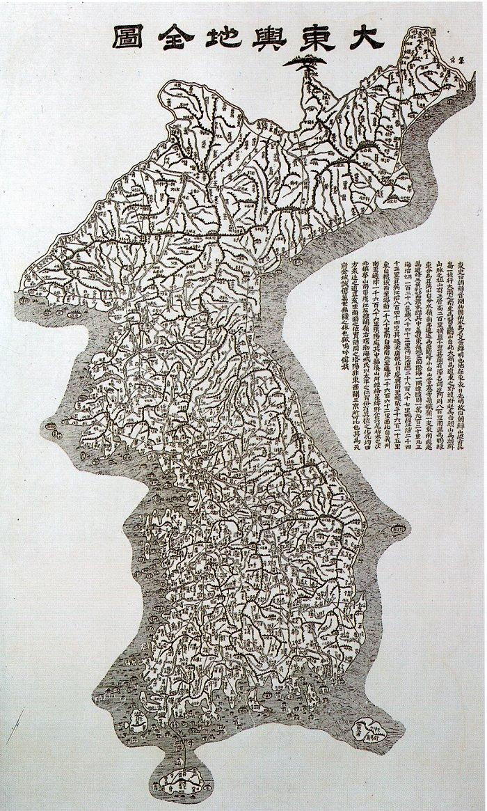

어서와, 한국은 처음이지?
핸드폰을 바꾸고 한국 지도 앱을 까는 걸 깜빡했다. 오랜만에 한국에 와서 구글 지도로 길을 찾다가 아차 싶었다. 아, 여기 한국이지. 한국사람이니 네이버지도든 카카오맵이든 자연스럽게 깔고 쓰니 해결됐다. 일단 구글맵은 한국에서 목적지는 찍히는데 길 안내가 안 뜬다. 한국에 놀러온 외국인 친구에게, 내가 추천한 맛집조차 제대로 안내해 주지 못해 머쓱했던 적이 있다. 결국 "네이버 지도 깔아"라고 말하게 되는데, 한국에 며칠 놀러온 외국인에겐 꽤나 번거로운 일이겠거니 싶었다.
전 세계 250개국, 20억 명이 쓰는 구글 지도가 유독 한국에서만 반쪽으로 작동한다. 연 1,800만 명이 넘는 외국인 관광객이 공항에 내리는 순간부터 이 벽에 부딪힌다. 왜 하필 한국에서만 그럴까.

먼저 공식적인 이유. 정밀한 길 안내를 하려면 정밀한 지도가 필요한데, 한국은 고정밀 지도 데이터를 해외 서버로 내보내는 걸 강하게 막아 왔다. 명분은 안보다. 한국은 휴전 중인 분단국가이고, 정밀 지도엔 군사시설 같은 보안 정보가 담길 수 있다. 그게 해외 데이터센터에 올라가면 유출 우려가 있다는 논리다.
그래서 구글은 한국에선 실제 거리 50m를 1cm로 줄인 1:5,000 정밀 지도가 아니라, 그보다 다섯 배 거친 1:25,000 지도로 버텨 왔다. 구글은 2007년 첫 요청을 시작으로 꾸준히 반출을 요구했지만, 정부는 그때마다 안보를 이유로 쳐냈다.
그런데 안보는 진실인 동시에, 아주 편리한 방패이기도 했다. 그 뒤엔 '디지털 주권'과 '미래 산업'이라는 거대한 판이 깔려 있었다.
도대체 구글은 왜 이토록 한국 지도에 집착했을까? 사실 한국은 예로부터 지도가 발달했다. 대동여지도를 보면 알 수 있다. 그 옛날 발품을 팔아 산맥과 물줄기를 엮어낸, 그 시대의 엄청난 정밀 데이터였다. 지금의 지도도 마찬가지다. 한국의 1대 5천 지도는 단순한 그림이 아니다. 땅 밑 가스관의 깊이, 도로의 미세한 경사각까지 소수점 단위로 촘촘하게 기록된 '초정밀 설계도'다. 이건 앞으로 다가올 AI와 자율주행 기술의 핵심 식량이다. 게다가 중국 시장이 꽉 막힌 구글 입장에서 한국은 아시아 생태계를 장악하기 위한 전략적 요충지일 수밖에 없었다.

반대로 한국은 필사적으로 버텼다. 자국 포털이 없어 구글에 생태계를 헌납한 유럽이나 일본과 달리, 한국은 네이버와 카카오라는 튼튼한 토종 플랫폼이 있었다. 세계를 호령하는 구글 검색도 우리나라에서는 통하지 않았다. 그런데 지도는 더 힘들었다. 지도를 한 번 내어준다는 건 단순히 길 안내를 넘겨주는 게 아니다. 검색, 쇼핑, 물류 등 연관 산업 전체가 구글에 잠식되고, 자율주행 같은 미래 산업에서 막대한 데이터 이용료를 바쳐야 하는 '디지털 식민지'로 전락할 위험이 컸기 때문이다.

이런 방어전이 단순한 기우가 아님은 바다 건너 사례들이 증명한다. 일본의 대표적인 지도 업체 '제린(Zenrin)'을 보자. 이들은 구글에 정밀 데이터를 제공하며 협력했다가, 자체 지도를 모두 완성한 구글로부터 하루아침에 일방적인 계약 해지를 당했다. 생태계가 그대로 붕괴한 거다. 유럽과 호주 역시 상황은 비슷하다. 구글 지도가 지역 시장을 완전히 독점한 이후, 상권 장악은 물론이고 압도적인 점유율을 무기로 이용료 폭리를 취하는 횡포에 고스란히 시달리고 있다. 지도는 한 번 독점되면 뒤집을 수 없다는 걸 다들 뼈저리게 배운 거다.
결국 2026년 2월, 그 철옹성 같던 '지도 만리장성'에 문이 열렸다. 정부가 글로벌 스탠다드와 거센 통상 압박을 견디지 못하고 고정밀 지도 데이터 반출을 '조건부'로 허가한 것이다. 2007년 첫 요청에서 꼭 19년 만이다.
물론 안전장치는 걸었다. 구글의 데이터를 해외로 내보내기 전 국내 전문가의 엄격한 검수를 거치도록 했고, 약속 위반이나 보안 문제가 발생하면 데이터 송출을 즉각 차단해 버리는 이른바 '레드 버튼'을 쥐었다.
한국의 지도 규제는 늘 교과서적인 '갈라파고스' 사례였다. 바깥과 단절된 섬에서 토종 종(種)이 무성하게 자라는 것. 토종 플랫폼을 지킨 건 분명한 성과지만, 동시에 한국을 철저히 닫힌 시장으로 보이게 한 비용이기도 했다.
지도는 한 번도 그냥 지도였던 적이 없다. 그 위에 모든 비즈니스가 얹히는 가장 아래 지층이다. 한국은 이제 마침내 그 빗장을 살짝 열었다. 글로벌 스탠다드라는 물결과 외국인 관광객의 편의라는 명분은 얻었지만, 이제 국내 플랫폼 기업들은 19년 동안 자신들을 지켜주던 든든한 국가의 보호막 없이, 구글이라는 글로벌 거인과 안방에서 맨몸으로 피 튀기는 전쟁을 치러야 한다.
그 19년의 울타리가 토종 선수들을 실전에서도 통할 맹수로 키워냈을지, 아니면 온실 속 화초로 만들었을지. 이제 진짜 성적표를 깔 시간이다.